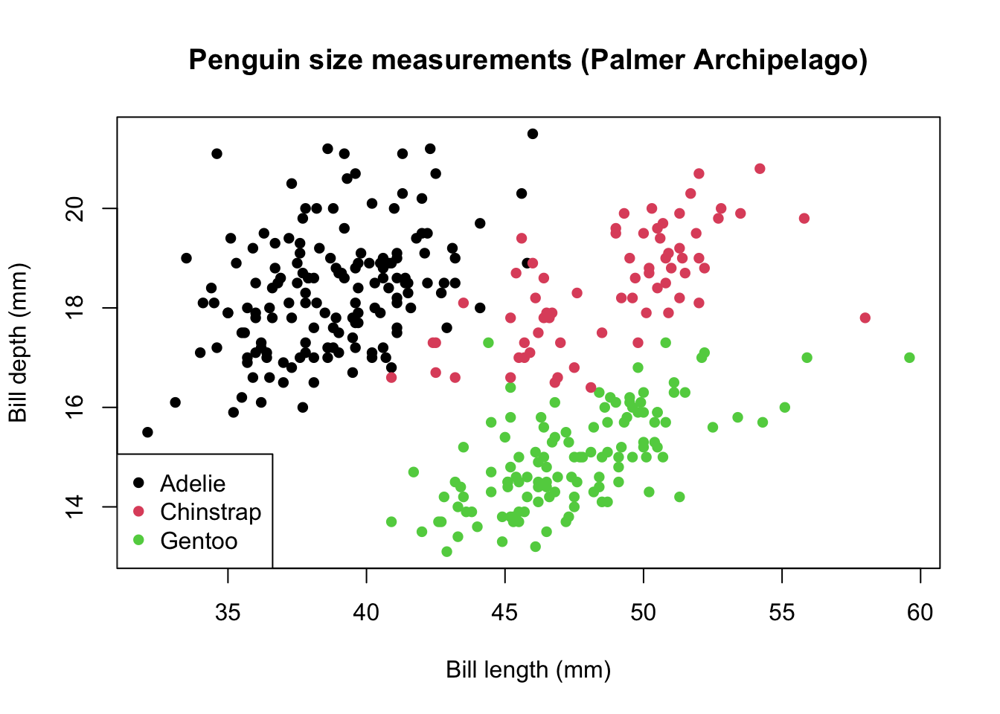
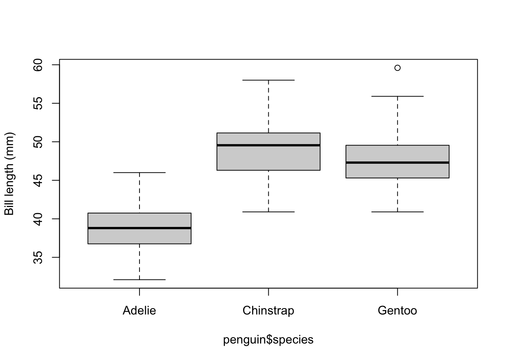
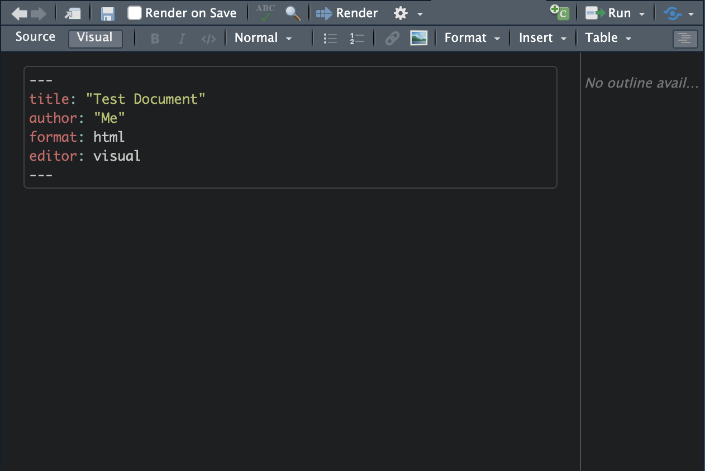
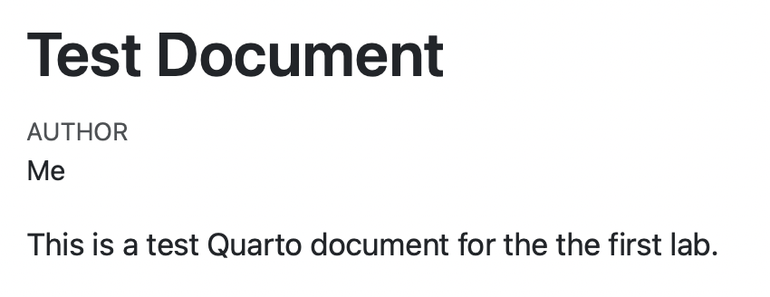

plot(x, y)GEOG 5160 6160 Lab 01
Introduction
In this lab, we will introduce the basic functionality of R, together with some simple plotting functions. We will be using the following files for these examples:
- A dataset of morphological measurements of three species of penguin from the file penguins.csv
More information about this dataset can be found here: https://allisonhorst.github.io/palmerpenguins/index.html
Introduction to R
A quick note on formatting
In this and subsequent labs, code that can be entered into R will be high-lit, e.g.:
And R output will be formatted with ## at the start of the line. File names will be given in italics and will be available in the ‘Datafiles’ directory on the course Canvas site or through links on the class webpage.
Getting started
RStudio layout
The R Studio interface consists of several windows. Start R Studio from the ‘Start’ menu under Windows, and the following window should appear:

- Bottom left: console window (also called command window). Here you can type simple commands after the
>prompt and R will then execute your command. This is the most important window, because this is where R actually does stuff. - Top left: editor window (also called script window). Collections of commands (scripts) can be edited and saved. When you don’t see this window, you can open it with [File \(>\) New \(>\) R script]. Just typing a command in the editor window is not enough, it has to get into the command window before R executes the command. If you want to run a line from the script window (or the whole script), copy and paste it to the console. Alternatively, you can click [Run] or press CTRL+ENTER to send it to the command window.
- Top right: workspace / history window. In the workspace window you can see which data and values R has in its memory. You can view and edit the values by clicking on them. The history window shows what has been typed before.
- Bottom right: Files / plots / packages / help window. Here you can open files, view plots (also previous plots), install and load packages or use the help function. You can change the size of the windows by dragging the grey bars between the windows.
Working with R
Much of your time spent with R will involve typing commands in at the console, and R Studio has some help with this.
- The up/down arrow keys allow you to cycle back through commands that have been previously entered. You can then modify or reuse these as necessary. The commands can also be accessed through the `History’ tab in the top-right panel
- The console has ‘tab-completion’, which allows you to enter the first few characters of a string or function name, press ‘Tab’, and R Studio will bring up a list of possible options that match the string you entered. Try typing
priand pressing ‘Tab’ - you should seeprintas part of the list, and you can click on this, or scroll down to use it from the list.
Workspace
R has a workspace where variables and data are stored as you use it. This is held in the memory of the computer, so if you are working from a file, you will need to read it in to the R workspace, and then work on the values held in memory. This means that you only access files to read in or write out data, the rest of the time you are working on a copy in the workspace.
Working directory
R defines the working directory as the folder in which it is currently working. When you ask R to open a certain file, it will look in the working directory for this file, and when you tell R to save a data file or plot, it will save it in the working directory.
For this class, the labs will assume that you have your files organized according to the following structure:
+-- geog6160
| +-- datafiles
| +-- lab01
| +-- lab02
| +-- lab03
...
| +-- lab15To do this, go to your Documents folder, and create a new folder called geog6160. In this now create two new folders, one called datafiles (where we will store all the data used across all labs and one called lab01, which we will use for today’s lab.
Once you have created these folders, we need to change R’s working directory so that it is pointing to lab01. The easiest way to do this is by going to the [Session] menu in RStudio, then [Change working directory]. This will open a file browser that you can use to browse through your computer and find the folder. (If you are using the base version of R, go to [File] \(>\) [Change dir…] in Windows, or [Misc] \(>\) [Change Working Directory] in Mac.)
You can also change the working directory manually using the setwd() function in the console. To do this, you may need to know the full path to the folder on your computer. If you followed the instructions given above, this should be:
- On a Windows system:
C:/Users/username/Documents/geog6160/lab01 - On a Mac OSX system:
/Users/username/Documents/geog6160/lab01
Where username is your name on the computer. You can also find this path by
- On a Windows system:
- Use the File Explorer to select the folderlab01` - Right-click the folder and select ‘Properties’
- In the pop-up window, the path will be listed under ‘Location’
- Highlight this, and copy the path
- On a Mac OSX system:
- Use the Finder app to select the folder
lab01 - Go to the “View” menu then “Show Path Bar”. THis will make the full path appear at the bottom of the Finder window
- Right-click the Path Bar file name
- Select “Copy as Pathname” You can now run the
setwd()command. Go to the console window in RStudio and enter the following code:
setwd("")And paste your directory. The code should look something like this:
setwd("C:/Users/username/Documents/geog6160/lab01")Note that the slashes are forward slashes and don’t forget the quotations. R is case sensitive, so make sure you write capitals where necessary. To check that you have correctly changed directory, enter the following command, which will show you the current working directory:
getwd()You can also use relative paths. If your current working directory is geog6160 and you want to change to lab01, enter the following code (where the ./ changes the directory to a level higher than the current one).
setwd("./lab01")If your current working directory is lab01 and you want to change to geog6160, enter the following code (where the ../ changes the directory to a level below the current one).
setwd("../")Finally, if your current working directory is lab01 and you want to change to lab02, which is at the same level as the current directory, enter the following code (where the ../ changes the directory to a level below the current one, and lab02 then moves to the level above that).
setwd("../lab02")Before proceeding with the rest of today’s lab, make sure to change your working directory back to lab01.
If this all seems a little foreign to you, don’t worry - there will be plenty of opportunities to practice this over the semester. Understanding the directory structure is very important in being able to manage your files both for this class and any analysis you do.
Using the console
In the console, the ‘>’ is the prompt, and your commands will be entered here. Click on the console window, then enter the following:
2+2[1] 4And press ‘Enter’, and R will tell you, not too surprisingly, that 2+2=4. The spacing is not relevant, you could equally enter 2 + 2 or 2+ 2 and get the same result. The [1] before the output is a vector index. It refers to the first value in the vector (here a vector of length 1). We’ll be using this later.
We can equally use standard math functions, for example, to take the natural log or square root of 2:
log(2)[1] 0.6931472sqrt(2)[1] 1.414214Working with variables in R
In this class, we are largely going to use functions from the tidyverse, a set of add-on packages designed to make data manipulation a little easier. Before going any further, make sure that these packages are installed by running the following code in the console:
install.packages("tidyverse")Now load the library so that you can access the functions:
library(tidyverse)R can use many different file types, but csv files are recommended as the easiest way to transfer between R and Excel. Start by changing your working directory to the directory holding the two file listed above. Then get a list of files as follows (note the use of the pattern parameter to get only certain files):
list.files(pattern=".csv")character(0)Larger data sets will most commonly be read in from files. A recommended format to use are csv (comma-separated value) files, as these may be easily exchanged with spreadsheet software. Let’s read in the data from the Penguin datafile (penguins.csv). Download this file from Canvas, and move it from your Download folder to the datafiles folder you created earlier. CSV files can be read in using the read.csv() function:
penguin <- read.csv("./datafiles/penguins.csv")Note that because this file is held in a different folder (datafiles) to your current working directory (lab01), you need to provide the relative path (../datafiles).
The first part of this code (penguin <-) tells R to store the data read in from the file in a data frame called penguin. To print out the contents of any object in R, simply type the name of that object at the command prompt. Other useful commands are class() to see what data class an object is, and names() to get a list of the column headers. The function str() is probably the most useful, describing the column names and the type of data stored in them.
penguin
class(penguin)
names(penguin)
str(penguin)The variable penguin here represents the whole data frame. If you want to access subsets of the data frame or individual values, you will need to understand indexes in R. There are two main methods to access parts of a data frame, the $ notation, and row/column indexes. The $ notation allows you to access individual columns:
penguin$bill_length_mm # Extract single columnAlternatively, we can use the select() function to extract specific columns. The |> operator is a pipe, which chains the output of one function to the input of a second:
penguin |>
select(bill_length_mm)The row/column notation is a more flexible approach, and allows you to access individual rows, columns or values, or to access a range of rows and columns
penguin[ ,4] # 4th column
penguin[10, ] # 10th rowAlternatively, you can access a range of rows and columns using ::
penguin[ ,1:4] # Columns 1 to 4
penguin[1:10, ] # First 10 rows
penguin[1:50,1:2] # First 50 rows of the first two columnsNote that the data frame can contain different data classes. Compare:
class(penguin) [1] "data.frame"class(penguin$bill_length_mm) [1] "numeric"class(penguin$species) [1] "character"To access specific values within a vector, use the index of that value:
penguin$bill_length_mm[3] # 3rd element
penguin$bill_length_mm[-3] # All but 3rd element
penguin$bill_length_mm[1:10] # First 10 elementsLogical operators \(<, <=, >, >=, ==, !=\) can be used to select parts of the data set by value in combination with the filter function. This is very useful if you only want to analyze a subset of your dataset
All penguins with bill length length over 40 :
penguin |>
filter(bill_length_mm > 40)All bill lengths over 40 mm:
penguin |>
filter(bill_length_mm > 40) |>
select(bill_length_mm)All “Adelie” penguins:
penguin |>
filter(species == 'Adelie')You can add multiple conditions, , so to get all instances of “Adelie” species with bill lengths greater than 40:
penguin |>
filter(species == 'Adelie' & bill_length_mm > 40)Factors
The vector of species names (penguin$species) is a set of character strings. R has another data type, a factor used to represent groups within your data. With a factor, R automatically assumes that every observation with the same name or level belongs to a single group, which can greatly facilitate comparing values between groups
You can convert a vector of character strings to a factor with the as.factor() function. The following code replaces the original species string with factor:
penguin$species <- as.factor(penguin$species)Now let’s recheck the class:
class(penguin$species)[1] "factor"If we now check the first 10 values, you will see some additional information showing the levels of the factor, i.e. the individual groups.
penguin$species[1:10] [1] Adelie Adelie Adelie Adelie Adelie Adelie Adelie Adelie Adelie Adelie
Levels: Adelie Chinstrap GentooR automatically sets the levels in alphabetical order, irrespective of the order in the vector. The first level is considered to be the reference level, which has some uses in regression model as we will see later. You can change the order of the levels using the factor() function. The following sets the species Gentoo as the reference:
factor(penguin$species, levels = c("Gentoo", "Chinstrap", "Adelie"))We will look further at how factors work in a later lab.
Functions in R
Functions typically are comprised of the name of the function (sqrt for taking square roots) and a set of parentheses. The parentheses are used to pass data to the function as well as setting parameters to change the behavior of the function.
sqrt(5)[1] 2.236068Note that we can use the assignment operator to save the output from a function, allowing you to use this in subsequent functions and analyses.
y <- sqrt(5)
round(y)[1] 2To save time and code, functions can be combined:
round(sqrt(5))[1] 2The seq() function produces a series of numbers on a regular step. By default, it require 3 parameters, the starting number, the ending number and the step.
seq(from = 0, to = 20, by = 2) [1] 0 2 4 6 8 10 12 14 16 18 20If you include the parameter names, as in this example, the order does not matter. The parameter names can be omitted if you keep to the specified order of parameters. So seq(0,20,2) will give you the equivalent results.
To find out what these parameters are, what they are called and what values they take, use the help() function, e.g. help(seq). This will open a window with the help file for that function. If you do not know the name of a function, there is a search function help.search(), or use the help browser help.start(), browse to packages or use the search engine.
Univariate statistics
Now create two new vectors in R containing the list of bill lengths and the list of species names. Note the use of the assignment operator <-. You can also use the equal sign (=) here and elsewhere in these examples.
bl <- penguin$bill_length_mm
sp <- penguin$speciesR has a large number of inbuilt functions. This section is designed to simply introduce you to the some basic functions for describing data. We’ll start by simply calculating the mean of the bill length values
mean(bl)[1] NAThis returns the value NA, rather than a mean length. So what went wrong? In the original set of data, there are some missing values, also denoted by NA.
bl[1:15] [1] 39.1 39.5 40.3 NA 36.7 39.3 38.9 39.2 34.1 42.0 37.8 37.8 41.1 38.6 34.6R’s default for most functions is to not calculate values when there are missing observations. This is really to alert you to the fact that the data are incomplete, and the value you would obtain might be biased. You can overrule this by adding the argument na.rm=TRUE to the following functions. This removes NAs and calculates the value with whatever is leftover.
Functions to describe the central tendency:
mean(bl, na.rm = TRUE)[1] 43.92193median(bl, na.rm = TRUE)[1] 44.45Functions to describe the dispersion (output not shown):
sd(bl, na.rm = TRUE)
var(bl, na.rm = TRUE)
min(bl, na.rm = TRUE)
max(bl, na.rm = TRUE)
quantile(bl, na.rm = TRUE)Note that quantile() takes a parameter that allows you to choose the quantile to be calculated, e.g. quantile(bl, c(0.1,0.9), na.rm = TRUE), will calculate the 10th and 90th percentile. Try adapting this to calculate the 25th and 75th percentile.
Some other useful functions:
sum(bl, na.rm = TRUE)
summary(bl)Note that we do not need to tell R to exclude NAs for the summary() function. This provides a set of summary statistics and lets you know how many values are missing.
Some specific functions for categorical data
levels(sp)
table(sp)As R is object oriented, functions will adapt to different data types
summary(bl) ## Summary of numeric vector
summary(sp) ## Summary of categorical vector
summary(penguin) ## Summary of data frameThe group_by() function
The group_by function allows you to apply a function to different subsets of data, without having to first split it into the subsets. On it’s own, this function simply creates the groups (here by species):
penguin |>
group_by(species)# A tibble: 344 × 8
# Groups: species [3]
species island bill_length_mm bill_depth_mm flipper_length_mm body_mass_g
<fct> <chr> <dbl> <dbl> <int> <int>
1 Adelie Torgersen 39.1 18.7 181 3750
2 Adelie Torgersen 39.5 17.4 186 3800
3 Adelie Torgersen 40.3 18 195 3250
4 Adelie Torgersen NA NA NA NA
5 Adelie Torgersen 36.7 19.3 193 3450
6 Adelie Torgersen 39.3 20.6 190 3650
7 Adelie Torgersen 38.9 17.8 181 3625
8 Adelie Torgersen 39.2 19.6 195 4675
9 Adelie Torgersen 34.1 18.1 193 3475
10 Adelie Torgersen 42 20.2 190 4250
# ℹ 334 more rows
# ℹ 2 more variables: sex <chr>, year <int>We can use the pipe operator to chain this to the summarize function to calculate summary values:
penguin |>
group_by(species) |>
summarize(mean_bill_length = mean(bill_length_mm, na.rm = TRUE))# A tibble: 3 × 2
species mean_bill_length
<fct> <dbl>
1 Adelie 38.8
2 Chinstrap 48.8
3 Gentoo 47.5Note that we can add more than one grouping, so to see the bill length by sex and species:
penguin |>
group_by(sex, species) |>
summarize(mean_bill_length = mean(bill_length_mm, na.rm = TRUE))`summarise()` has grouped output by 'sex'. You can override using the `.groups`
argument.# A tibble: 8 × 3
# Groups: sex [3]
sex species mean_bill_length
<chr> <fct> <dbl>
1 female Adelie 37.3
2 female Chinstrap 46.6
3 female Gentoo 45.6
4 male Adelie 40.4
5 male Chinstrap 51.1
6 male Gentoo 49.5
7 <NA> Adelie 37.8
8 <NA> Gentoo 45.6Repeat this and calculate the standard deviation per species.
Basic plotting in R
We’ll now look quickly at the basic plotting functions in R. R has a wide range of plotting types, and we will look at some more complex methods later in this class. For now, we will concentrate on the basic plotting function (plot()) and how to simply modify this.
Index plots
The simplest type of plot is an index plot, which simply plots values in the order they are recorded in the input vector. These are useful for examining the basic data structure and identifying errors and outliers. plot is a generic plotting command and will adapt to different data types. The parameter type='p' gives the plot type, here using points. Other options are 'l' for lines, 'h' for histogram lines, 's' for a stepped plot and 'b' for both line and points. See help(plot) for more options and other parameters.
plot(penguin$bill_length_mm, type = 'p')
As we have only asked to plot one variable, this is represented on the y-axis. The x-axis gives the index of the observation, in this case from 1 to 350.
Bivariate plots
More usefully, we can include a variable on both axis to show the relationship between them. We use the plot() function again, but now we give it two variables (x and y).
plot(penguin$bill_length_mm, penguin$bill_depth_mm)
The tidyverse equivalent to this is ggplot, which we will mainly use during this class as it provides a user-friendly interface for plotting. ggplot uses a series of functions to build up a plot. In it’s simplest form, we can create the previous plot as follows:
ggplot(penguin, aes(x = bill_length_mm, y = bill_depth_mm)) +
geom_point()Warning: Removed 2 rows containing missing values or values outside the scale range
(`geom_point()`).
Some things to note:
- We define an aesthetic (
aes()) which identifies the variables to be used on the x and y axes - We add a geometry to define the type of plot we want to make (a point or scatter plot)
As we know that these values come from three difference species, we can use this knowledge to add extra information to the plot, by adding a col argument to the aestehtic (you can also display different symbols using the shape argument):
ggplot(penguin, aes(x = bill_length_mm,
y = bill_depth_mm,
col = species)) +
geom_point()Warning: Removed 2 rows containing missing values or values outside the scale range
(`geom_point()`).
Let’s clean up this plot a little by specifying the axis labels and a title. We’ll also add a theme to remove the grey background. Note that we do this by adding (+) different plot elements sequentially:
ggplot(penguin, aes(x = bill_length_mm,
y = bill_depth_mm,
col = species)) +
geom_point() +
scale_x_continuous("Bill length (mm)") +
scale_y_continuous("Bill length (mm)") +
ggtitle("Penguins, penguins, penguins") +
theme_bw()An alternative way to look at the association between factors and a variable is, again, to use boxplots. Note that this code uses a tilde (\(\sim\)) between the variable and the set of factors. The tilde is often used to define dependency between two variables, and we will return to this again during the modeling part of this class.
ggplot(penguin, aes(x = species, y = bill_length_mm)) +
geom_boxplot() +
theme_bw()Warning: Removed 2 rows containing non-finite outside the scale range
(`stat_boxplot()`).
As the boxplot does not automatically label the y-axis, we add this with the ylab parameter. See help(plot) and help(par) for a complete list of the plotting parameters.
Summary plots
Summary plots attempt to describe the distribution of the data, giving some ideas about which values are most common and which are most rare. Histograms are commonly used for this method, values are ‘binned’ into a set of classes, and the histogram represents the frequency of occurrences in that bin. The size of the bins can be set with binwidth:
ggplot(penguin, aes(x = bill_length_mm)) +
geom_histogram(binwidth = 1) +
theme_bw()Warning: Removed 2 rows containing non-finite outside the scale range
(`stat_bin()`).
As before, we can use colors to define different groups of data. We’ll use these to fill the histogram bars:
ggplot(penguin, aes(x = bill_length_mm, fill = species)) +
geom_histogram(binwidth = 1) +
theme_bw()Warning: Removed 2 rows containing non-finite outside the scale range
(`stat_bin()`).
By default, these are show as stacked histogram bars (i.e. the height is the cumulative number of all species in a certain bin). We can change this to overlapping bins as follows (we’ll also move the legend to underneath the plot):
ggplot(penguin, aes(x = bill_length_mm, fill = species)) +
geom_histogram(binwidth = 1, position = 'identity', alpha = 0.6) +
theme_bw() +
theme(legend.position = "bottom")Warning: Removed 2 rows containing non-finite outside the scale range
(`stat_bin()`).
Faceting
You can add further information through the use of facets. These break the original plot into a series of small multiples according to some categorical variable. Here, we’ll demonstrate this by plotting the bill measurements, colored by species and faceted by island
ggplot(penguin, aes(x = bill_length_mm,
y = bill_depth_mm,
col = species)) +
facet_wrap(~island) +
geom_point() +
theme_bw() +
theme(legend.position = "bottom")Warning: Removed 2 rows containing missing values or values outside the scale range
(`geom_point()`).
Graphic output
By default, R plots graphics to the screen, but has the ability to save figures in most of the standard graphic formats. For a ggplot object, the easiest way is to save the output as an object, then use ggsave() to export:
p1 <- ggplot(penguin, aes(x = bill_length_mm,
y = bill_depth_mm,
col = species)) +
facet_wrap(~island) +
geom_point() +
theme_bw() +
theme(legend.position = "bottom")
ggsave("test.png", p1)This will also save into the majority of standard image formats simply by changing the file extension in the ggsave() command.
Alternatively, you can copy-paste directly into another file by going to [Export] -> [Copy to clipboard…] in R Studio’s plotting window.
Quitting R
When you are finished with R, exit by typing q() in the console (or going to [File] \(>\) [Quit R Studio]). You will be asked if you want to save your workspace. This is generally a good idea, as this will create a file containing all your current data (“.RData”), and the history (“.Rhistory”) of the commands you have used. If you restart R in the same directory, by clicking on an R script file, the workspace will be loaded automatically. If it doesn’t, you can load this by changing to the the correct working directory and typing:
load(".RData")Quarto documents
RStudio has several ways to store and work with your R code, including scripts, Markdown, and Quarto documents. We’ll take a quick look at the last of these here, as you will need to use these to submit your lab exercises. Quarto is a modifed markdown language that allows you to incorporate text, images, and R code and results in a single document. By default, it produces html documents (like the one you are reading), but can be modified to produce PDFs, books, websites etc.
To open a new Quarto document, go to the [File] menu, then [New File] -> [Quarto Document…]. This will open a dialog box where you can set the title and author name, as well as choose the output format. Add a title here (e.g. Test Document) and your name, and make sure that html is selected for the output type, then click [Create].
A new file will open that should look like this:

The top part of the file contains the header information (the YAML header), including the title and author, as well as the output format. There’s a lot of other options that you can add here, but for the moment, we’ll leave this alone. We’ll now add some text. You can either use the Visual editor or the Source code editor (chosen from the two buttons in the top right). Select the [Source] button and you’ll see the layout change slightly. (You can also do this with the Visual editor if you’d like.)
Now, below the last line of the header (the ---) add the following text:
This is a test Quarto document for the the first lab.Now save the file and give it a suitable name (e.g. lab01.qmd), then click the [Render] button. You’ll see some output appear as it converts this to html, and a file should open in your browser that looks like the following:

If the file doesn’t open automatically, look in your current working directory for the file lab01.html and open this.
Now we’ll add a little formatting. Change the text so that it looks like this:
# Introduction
## Subtitle
This is a test Quarto document for the the first lab. This is *italic text*, and this is **bold** text.
This makes a list:
- Item 1
- Item 2
- Etc.Now click the [Render] button again. The html file will update (you may need to refresh or reopen the file to see this). You should see that the text is now formatted. As a quick overview:
- Hashtags
#indicate headers (one#for a main header, two for a subheader, etc) - Single asterixs (
*) give emphasized text - Double asterixs give bold text
- Hyphens produce lists
See here for more formatting options.
We’ll now add some simple R code to the document. In the Source editor, code needs to be wrapped in tags that define a code chunk. This will look like this:
```{r}
5 + 6
```Save the file and render it again, and you should see both the code and the results (11) appear.
5 + 6[1] 11We’ll now add a quick figure as well using the Penguins dataset. When making Quarto documents, it’s important to understand that these work in a different memory workspace to your regular R session. So any data you have in memory will not be available to the document unless it is loaded specifically. Using the same format as above create a code chunk that reads in the Penguins dataset:
```{r}
library(tidyverse)
penguin <- read.csv("./datafiles/penguins.csv")
```Now add code to make the scatter plot of bill sizes (from above):
```{r}
ggplot(penguin, aes(x = bill_length_mm,
y = bill_depth_mm,
col = species)) +
geom_point()
```Save this and render it, and you should now see the figure appear in your output.
Exercise
For this lab, all you will need to do is add a second figure to your Quarto document and render it. You can choose any of the other figures introduced in this lab. You should submit the following through Canvas by January 27th:
- The Quarto document
- The rendered HTML page